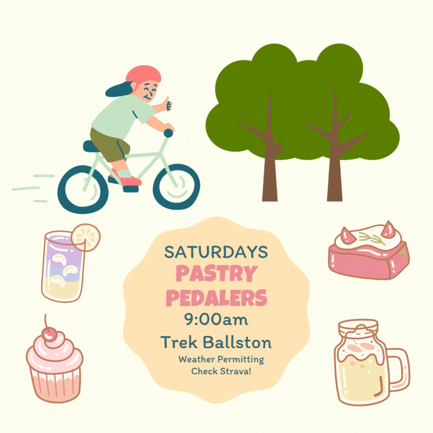

Projects / 🥐 pastry pedalers

I was talking to a couple friends about cycling, and each of them (separately) told me that they wanted to bike more. Accountability is such a powerful tool, especially for casual or beginner cyclists, and so, with the encouragement of my unofficial biking coach, I started a weekly Strava club ride for the Trek Ballston store.
I'm learning that if you are deficient in Wholesomeness in your life, organizing or attending local & recurring activities like a group bike ride is so conducive to getting that vitamin W. The first week was just my friend and someone interested in getting more experience with group riding. The third week, a father-daughter duo joined (the teenaged daughter was forced to join, with the enticement of a pain au chocolate😄). Even only a month in, I'm reaping the benefits of having the courage to starting the culture I want to see in the world, or "be[ing] the change you wish to see in the world", as in the words of Gandhi. 10/10 would recommend.
The bonus was that I learned about warehouse volunteer nights at Vélocity Bicycle Cooperative, and I started to go there regularly too. As a child of immigrants, I fit the stereotype of being stingy af, and I am volunteering to learn how to fix bikes so that I can save money should my own bike need repairs🤑.